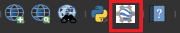
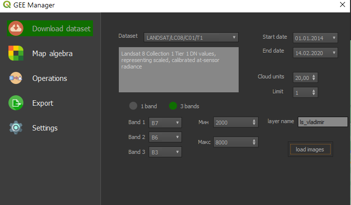
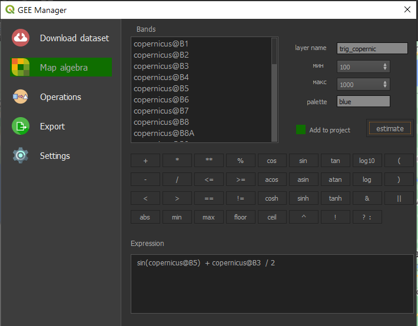
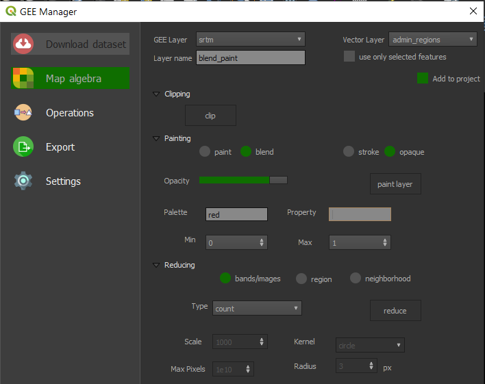
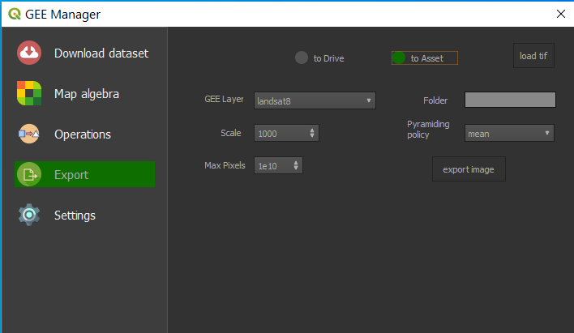
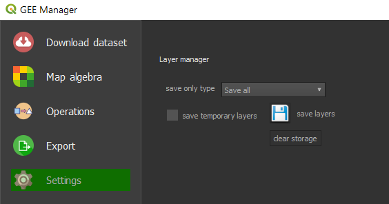

Данное программное обеспечение реализует графический интерфейс, упрощающий взаимодействие с серверами Google Earth Engine и позволяющий использовать векторные объекты QGIS.
Необходимо иметь предварительно установленный плагин Google Earth Engine, который можно найти в менеджере модулей QGIS, а также пройти аутентификацию.
Установка
Расширение имеется в открытом доступе на IT-хостинге GitHub по адресу https://github.com/dima4914/gee
Чтобы установить его, можно клонировать репозиторий в папку, где хранятся все плагины QGIS, введя команду в командной строке Windows:
git clone https://github.com/dima4914/gee.gitВторой вариант установки, более простой, заключается в скачивании zip-архива по указанной выше ссылке и использовании функциональности «Установить из ZIP» в менеджере модулей QGIS. В это случае плагин будет автоматически установлен в необходимой директории.
После установки на панели инструментов должна отобразиться соответствующая кнопка с иконкой, запускающая диалоговое окно (рис. 1).

Панель «Download dataset»
Данная панель необходима для загрузки датасетов Google Earth Engine в виде WMS-слоев в среду QGIS (рис. 2). В выпадающем списке «dataset» можно выбрать один из предложенных наборов данных GEE или вручную ввести название своего изображения при условии, что оно было предварительно загружено в личный набор данных Asset Редактора кода GEE. При смене предлагаемого датасета ниже отображается его краткое описание, а выпадающие списки «Band *» автоматически заполняются доступными для выбора каналами.

Также можно выбрать количество каналов – 1 или 3 при помощи соответствующих переключателей. При первом выборе два последних канала станут неактивными, а итоговое подгружаемое изображение станет черно-белым. Параметры «min» и «max» используются для определения интервала значений всех каналов, в пределах которого отображаемые цвета будут меняться. То есть значения, которые будут больше верхнего предела или меньше нижнего будут отображаться на растре, словно они соответствуют верхнему или нижнему пределу соответственно.
Параметры фильтрации, настраиваемые в правой части окна, будут применяться только в том случае, если загружается коллекция изображения, для одиночного растра они не имеют смысла. Параметры «Start date» и «End date» отвечают за установление временного интервала, чтобы оставить только те снимки коллекции, дата получения которых входит в этот интервал. При изменении данных параметров всплывает календарь для более удобного выбора даты. Параметр «Cloud units» определяет процент допустимой облачности на снимках коллекции, и наконец параметр «Limit» устанавливает предел на количество подгружаемых снимков, его максимально возможное значение 5000. Если в проекте QGIS в текущем векторном слое выделен объект, то будет дополнительно осуществлена пространственная фильтрация – то есть будут подгружены только те изображения, которые пересекают выделенный векторный объект.
В строку ввода «layer name» необходимо ввести уникальное название слоя, которое будет применено в менеджере слоев QGIS.
Кнопка «load images» запускает процесс загрузки растровых данных, выбранной коллекции или отдельного изображения в соответствии с установленными параметрами визуализации и фильтрации. В итоге в проект QGIS добавляется новый WMS-слой с данными GEE.
Панель «Map algebra»
Панель реализует растровую алгебру, то есть совокупность попиксельных операций с растрами, где операции могут быть алгебраические, арифметические, логические и т.д. Поле «Bands» автоматически заполняется каналами всех доступных в проекте растровых данных GEE для их удобного выбора (рис. 3).

Поле «Expression» предназначено для вписывания растровых выражений, которые могут формироваться полностью посредством использования кнопок сверху, добавляющих операторы, функции или скобки в данное поле при нажатии.
В параметре «layer name» вписывается названия итогового слоя. Параметры «min» и «max» выполняют ту же функцию, что и соответствующие параметры в предыдущем разделе.
Дополнительно можно вписать цвет, в оттенках которого будет отображен итоговый растр, в поле «palette». Поле принимает строку с названием цвета (ex. Blue), либо его шестнадцатеричный код, к примеру, ‘FF0000’ (красный цвет).
Дополнительный флажок «Add to project» определяет, будет ли слой подгружен в проект QGIS. Если нет, то будет впоследствии создан временный слой, данные о котором будут храниться в структурах плагина (специальном классе, представляющем хранилище слоев). При этом временный слой можно будет также выбрать из выпадающих списков, где необходимо выбрать слой GEE (панель «Export» или «Operations»), наравне с подгруженными для дальнейшей работы.
Кнопка «Estimate» запускает процесс обработки растрового изображения, в итоге новый созданный слой подгружается в проект, либо его данные помещаются во временное хранилище.
Панель «Operations»
Данная панель позволяет осуществлять несколько базовых операций Google Earth Engine над растровыми данными, также используя векторные слои QGIS вместо прокси-объектов (рис. 4). В начале выбирается доступный слой GEE, временный или подгруженный в проект (параметр «GEE layer») , а также векторный слой, если он необходим для осуществления операции (в принципе векторный слой применяется в любой из доступных на панели операций, кроме перерасчета пикселей с учетом их окрестности в разделе «Reducing», режим «neighborhood»). При этом есть возможность использовать только выделенные объекты выбранного векторного слой или слой целиком. Данный параметр устанавливается при помощи флажка «use only selected features».

Имя итогового слоя прописывается в поле «Layer name». Также присутствует флажок «Add to project», определяющий, добавлять итоговый слой в проект или временно его сохранить.
Первый отдел «Clipping» позволяет обрезать выбранный GEE слой по заданным векторным объектам. Для запуска необходимо нажать кнопку «clip».
Отдел «Painting» дает возможность отрисовывать векторные объекты на растрах GEE, делая их одним целым. Отрисовка может осуществляться в двух режимах –paint или blend. Выбрать режим можно соответствующим переключателем сверху. При выборе режима paint параметр «palette» и «opacity» становятся неактивным. Также можно определить, рисовать векторные объекты с внутренним содержимым или только обводку, при помощи переключателей stroke/opaque.
В первом режиме векторные объекты напрямую наносятся на соответствующий GEE растр, что делает бессмысленной настройку цветовой шкалы, так как в этом случае изменится и исходное содержимое растра, поэтому не рекомендуется изменять параметры растяжения шкалы «min» и «max». Однако данный режим прост для понимания и отлично подходит для создания темных контуров векторных объектов на растрах.
Второй режим создает новый пустой растр и отрисовывает на нем векторные объекты. При этом можно настроить цвет внутреннего содержимого данных объектов и установить соответствующие параметры «min» и «max». Также можно настроить прозрачность этого растра при помощи ползунка «opacity». Далее созданный растр смешивается с исходным, и получается объединенное изображение. Поле «property» используется для обозначения атрибута векторного слоя, по значениям которого будут присваиваться цвета отрисовываемым объектам в соответствии с установленной цветовой шкалой. Кнопка «paint layer» запускает процесс отрисовки.
Третий отдел предназначен для операций «свертки» (reducing) растров. Можно выбрать один из трех доступных режимов – «bands/images», «region» и «neighborhood» при помощи соответствующих переключателей. Для каждого из режимов определен свой набор параметров, поэтому часть виджетов становится неактивной. Кнопка «reduce» запускает вычисления с данными параметрами.
У первого режима есть только один доступный параметр – «Type», который отвечает за тип статистической функции, применяемой к каждой группе пикселей каналов или изображений (в случае использования коллекции растров). Векторный слой в данном режиме применяется только для автоматического задания интервала цветовой шкалы. В результате получается одноканальный растр (при применении операции к отдельному изображению), либо многоканальный растр (при использовании коллекции изображений, так как расчет пикселей идет по каждому каналу каждого изображения).
Второй режим определяет операции статистики региона и дополнительно использует параметры «Scale» и «Max Pixels», которые отвечают за пространственное разрешения растров при расчете и допустимое количество пикселей в пределах рассматриваемого региона. Регион ограничивается объектом векторного слоя и именно по нему рассчитывается статистика. После применения операции в результате всплывает окно информационного сообщения со всеми рассчитанными значениями для каждого канала. Стоит отметить, что использования коллекций в данном случае не допускается.
Последний режим «neighborhood» перерассчитывает каждый пиксель растра в соответствии с его окрестностью. Кроме статистической функции используются параметры «Kernel» и «Radius». Первый отвечает за вид применяемой окрестности, то есть фигуры (плюс, квадрат и т.д.), второй – за радиус данной фигуры. Чем больше радиус, тем менее резкое изображение в итоге получается. При использовании коллекции растров «свертка» окрестности применяется для каждого ее изображения в отдельности.
Панель «Export»
Панель отвечает за экспорт полученных изображений в набор данных Редактора кода GEE (Asset), либо в Google Drive пользователя (рис. 5). Изменение вида экспорта осуществляется при помощи переключателей, доступных сверху окна.

В выпадающем списке «GEE Layer» предлагаются на выбор GEE слои, подгруженные в проект, и временные слои, которые будут экспортированы. Параметры «Scale» и «Max Pixels» определяют пространственное разрешение в метрах и максимально допустимое количество пикселей на экспортируемый растр. В поле «Folder» вводится название папки, в которой будет сгенерирован растр. Также при выборе режима экспорта «to Asset» становится видимым параметр «Pyramiding policy», он определяет, каким образом будут создаваться уровни детализации растра с более низким разрешением (более высокий уровень пирамиды), то есть каким образом соседние пиксели будут агрегированы. Кнопка «export image» запускает процесс экспорта, при этом в информационном баннере окна QGIS будет периодически отображаться статус данного процесса.
Есть также возможность определения экспортируемой области растра. Для этого при запуске процесса необходимо иметь выделенный объект в текущем векторном слое. По его границам экспорт и будет произведен.
Вызов дополнительная кнопки «load tif» открывает Редактор кода GEE в браузере по умолчанию. Необходима она для загрузки локальных геоизображений в формате geotiff в наборы данных (Asset), так как иного способа подгрузки собственных растров пока не имеется. После загрузки растра его также можно добавить в QGIS в виде WMS-слоя при помощи панели «Download dataset».
Панель «Settings»
Реализует возможность хранения информации о GEE слоях в контекстных переменных проекта при помощи кнопки «save layers», а также возможность очистки хранилища кнопкой «clear storage» (рис. 6). На данный момент не обладает полной функциональностью.

При установленном флаге «save temporary layers» сохраняет также временные слои. Выпадающий список «save only type» позволяет установить тип сохраняемых прокси-объектов.